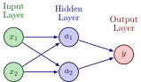
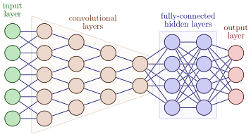
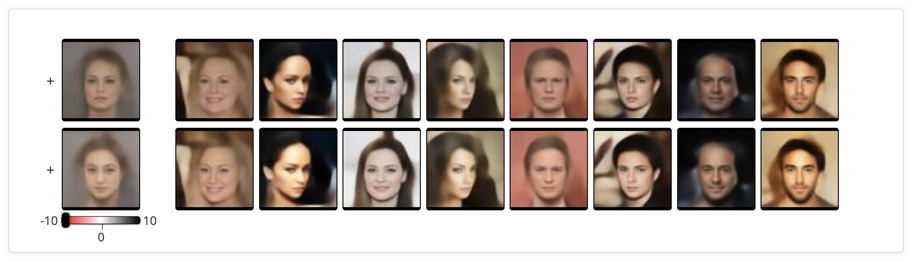

Code
source("../dsan-globals/_globals.r")
set.seed(5300)DSAN 5300: Statistical Learning
Spring 2025, Georgetown University
Today’s Planned Schedule:
| Start | End | Topic | |
|---|---|---|---|
| Lecture | 6:30pm | 7:00pm | Single Layer Neural Networks → |
| 7:00pm | 7:20pm | Max-Margin Classifiers → | |
| 7:20pm | 8:00pm | Support Vector Classifiers → | |
| Break! | 8:00pm | 8:10pm | |
| 8:10pm | 9:00pm | Fancier Neural Networks → |
source("../dsan-globals/_globals.r")
set.seed(5300)\[ \DeclareMathOperator*{\argmax}{argmax} \DeclareMathOperator*{\argmin}{argmin} \newcommand{\bigexp}[1]{\exp\mkern-4mu\left[ #1 \right]} \newcommand{\bigexpect}[1]{\mathbb{E}\mkern-4mu \left[ #1 \right]} \newcommand{\definedas}{\overset{\small\text{def}}{=}} \newcommand{\definedalign}{\overset{\phantom{\text{defn}}}{=}} \newcommand{\eqeventual}{\overset{\text{eventually}}{=}} \newcommand{\Err}{\text{Err}} \newcommand{\expect}[1]{\mathbb{E}[#1]} \newcommand{\expectsq}[1]{\mathbb{E}^2[#1]} \newcommand{\fw}[1]{\texttt{#1}} \newcommand{\given}{\mid} \newcommand{\green}[1]{\color{green}{#1}} \newcommand{\heads}{\outcome{heads}} \newcommand{\iid}{\overset{\text{\small{iid}}}{\sim}} \newcommand{\lik}{\mathcal{L}} \newcommand{\loglik}{\ell} \DeclareMathOperator*{\maximize}{maximize} \DeclareMathOperator*{\minimize}{minimize} \newcommand{\mle}{\textsf{ML}} \newcommand{\nimplies}{\;\not\!\!\!\!\implies} \newcommand{\orange}[1]{\color{orange}{#1}} \newcommand{\outcome}[1]{\textsf{#1}} \newcommand{\param}[1]{{\color{purple} #1}} \newcommand{\pgsamplespace}{\{\green{1},\green{2},\green{3},\purp{4},\purp{5},\purp{6}\}} \newcommand{\prob}[1]{P\left( #1 \right)} \newcommand{\purp}[1]{\color{purple}{#1}} \newcommand{\sign}{\text{Sign}} \newcommand{\spacecap}{\; \cap \;} \newcommand{\spacewedge}{\; \wedge \;} \newcommand{\tails}{\outcome{tails}} \newcommand{\Var}[1]{\text{Var}[#1]} \newcommand{\bigVar}[1]{\text{Var}\mkern-4mu \left[ #1 \right]} \]

\[ \begin{align*} {\color{#976464} y} &= { \color{#976464} \beta_0 } + {\color{#666693} \sum_{k=1}^{5} } {\color{#976464} \beta_k } { \color{#666693} \overbrace{\boxed{a_k} }^{\mathclap{k^\text{th}\text{ activation}}} } \\ {\color{#976464} y} &= { \color{#976464} \beta_0 } + {\color{#666693} \sum_{k=1}^{5} } {\color{#976464} \beta_k } { \color{#666693} \underbrace{ g \mkern-4mu \left( w_{k0} + {\color{#679d67} \sum_{j=1}^{4} } w_{kj} {\color{#679d67} x_j} \right) }_{k^\text{th}\text{ activation}}} \end{align*} \]

\[ \begin{align*} Y &= {\color{#e69f00} X_1 X_2 } \\ Y &= {\color{#56b4e9} X_1^2 + X_2^2 } \\ Y &= {\color{#009E73} X_1 \underset{\mathclap{\small \text{XOR}}}{\oplus} X_2} \end{align*} \]

\[ \begin{align*} {\color{#666693} a_1 } &= g(0 + (1)(x_1) + (0)(x_2)) = x_1^2 \\ {\color{#666693} a_2 } &= g(0 + (0)(x_1) + (1)(x_2)) = x_2^2 \end{align*} \]
\[ {\color{#976464} y } = 0 + (1)(x_1^2) + (1)(x_2^2) = {\color{#56b4e9} x_1^2 + x_2^2} \; ✅ \]
\[ \begin{align*} {\color{#666693} a_1 } &= g(0 + (1)(x_1) + (1)(x_2)) = (x_1 + x_2)^2 = x_1^2 + x_2^2 +2x_1x_2 \\ {\color{#666693} a_2 } &= g(0 + (1)(x_1) + (-1)(x_2)) = (x_1 - x_2)^2 = x_1^2 + x_2^2 - 2x_1x_2 \end{align*} \]
\[ {\color{#976464} y } = 0 + \left(\frac{1}{4}\right)(x_1^2 + x_2^2 + 2x_1x_2) + \left(-\frac{1}{4}\right)(x_1^2 + x_2^2 - 2x_1x_2) = {\color{#e69f00} x_1x_2} \; ✅ \]
\[ \begin{align*} {\color{#666693} a_1 } &= g(0 + (1)(x_1) + (1)(x_2)) = (x_1 + x_2)^2 = x_1^2 + x_2^2 +2x_1x_2 \\ {\color{#666693} a_2 } &= g(0 + (1)(x_1) + (-1)(x_2)) = (x_1 - x_2)^2 = x_1^2 + x_2^2 - 2x_1x_2 \end{align*} \]
\[ \begin{align*} {\color{#976464} y }(0,0) &= 0 + (0)(0^2 + 0^2 + 2(0)(0)) + (1)(0^2 + 0^2 - 2(0)(0)) = {\color{#009e73} 0} \; ✅ \\ {\color{#976464} y }(0,1) &= 0 + (0)(0^2 + 1^2 + 2(0)(1)) + (1)(0^2 + 1^2 - 2(0)(1)) = {\color{#009e73} 1} \; ✅ \\ {\color{#976464} y }(1,0) &= 0 + (0)(1^2 + 0^2 + 2(1)(0)) + (1)(1^2 + 0^2 - 2(1)(0)) = {\color{#009e73} 1} \; ✅ \\ {\color{#976464} y }(1,1) &= 0 + (0)(1^2 + 1^2 + 2(1)(1)) + (1)(1^2 + 1^2 - 2(1)(1)) = {\color{#009e73} 0} \; ✅ \end{align*} \]
library(tidyverse) |> suppressPackageStartupMessages()
library(latex2exp) |> suppressPackageStartupMessages()
xor_df <- tribble(
~x1, ~x2, ~label,
0, 0, 0,
0, 1, 1,
1, 0, 1,
1, 1, 0
) |>
mutate(
h1 = (x1 - x2)^2,
label = factor(label)
)
xor_df |> ggplot(aes(x=x1, y=x2, label=label)) +
geom_point(
aes(color=label, shape=label),
size=g_pointsize * 2,
stroke=6
) +
geom_point(aes(fill=label), color='black', shape=21, size=g_pointsize * 2.5, stroke=0.75, alpha=0.4) +
scale_x_continuous(breaks=c(0, 1)) +
scale_y_continuous(breaks=c(0, 1)) +
expand_limits(y=c(-0.1,1.1)) +
# 45 is minus sign, 95 is em-dash
scale_shape_manual(values=c(95, 43)) +
theme_dsan(base_size=32) +
remove_legend_title() +
labs(
x=TeX("$x_1$"),
y=TeX("$x_2$"),
title="XOR Problem: Original Features"
)library(tidyverse)
xor_df <- tribble(
~x1, ~x2, ~label,
0, 0, 0,
0, 1, 1,
1, 0, 1,
1, 1, 0
) |>
mutate(
h1 = (x1 - x2)^2,
h2 = (x1 + x2)^2,
h2 = ifelse(h1 > 0.5 & x2==0, h2 + 0.5, h2),
label = factor(label)
)
xor_df |> ggplot(aes(x=h1, y=h2, label=label)) +
geom_vline(xintercept=0.5, linetype="dashed", linewidth=1) +
# Negative space
geom_rect(xmin=-Inf, xmax=0.5, ymin=-Inf, ymax=Inf, fill=cb_palette[1], alpha=0.15) +
# Positive space
geom_rect(xmin=0.5, xmax=Inf, ymin=-Inf, ymax=Inf, fill=cb_palette[2], alpha=0.15) +
geom_point(
aes(color=label, shape=label),
size=g_pointsize * 2,
stroke=6
) +
geom_point(aes(fill=label), color='black', shape=21, size=g_pointsize*2.5, stroke=0.75, alpha=0.4) +
expand_limits(y=c(-0.2,4.2)) +
# 45 is minus sign, 95 is em-dash
scale_shape_manual(values=c(95, 43)) +
theme_dsan(base_size=32) +
remove_legend_title() +
labs(
title="NN-Learned Feature Space",
x=TeX("$h_1(x_1, x_2)$"),
y=TeX("$h_2(x_1, x_2)$")
)library(tidyverse)
x1_vals <- seq(from=0, to=1, by=0.0075)
x2_vals <- seq(from=0, to=1, by=0.0075)
grid_df <- expand.grid(x1=x1_vals, x2=x2_vals) |>
as_tibble() |>
mutate(
label=factor(as.numeric((x1-x2)^2 > 0.5))
)
ggplot() +
geom_point(
data=grid_df,
aes(x=x1, y=x2, color=label),
alpha=0.4
) +
geom_point(
data=xor_df,
aes(x=x1, y=x2, color=label, shape=label),
size=g_pointsize * 2,
stroke=6
) +
geom_point(
data=xor_df,
aes(x=x1, y=x2, fill=label),
color='black', shape=21, size=g_pointsize*2.5, stroke=0.75, alpha=0.4
) +
geom_abline(slope=1, intercept=0.7, linetype="dashed", linewidth=1) +
geom_abline(slope=1, intercept=-0.7, linetype="dashed", linewidth=1) +
scale_shape_manual(values=c(95, 43)) +
theme_dsan(base_size=32) +
remove_legend_title() +
labs(
title="XOR Problem: Inverted NN Features",
x=TeX("$X_1$"), y=TeX("$X_2$")
)

\[ z_d = \Pr(Y = d \mid X) = \frac{e^{y_d}}{\sum_{i=0}^{9}e^{y_i}} \]
\[ \begin{align} 0 \leq z_d &\leq 1 \; \; \forall ~ d \in \{0,\ldots,9\} \\ \sum_{d=0}^{9}z_d &= 1 \end{align} \]




…More next week, tbh


(Full NN playlist here)